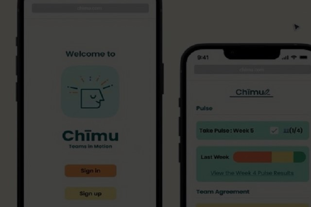
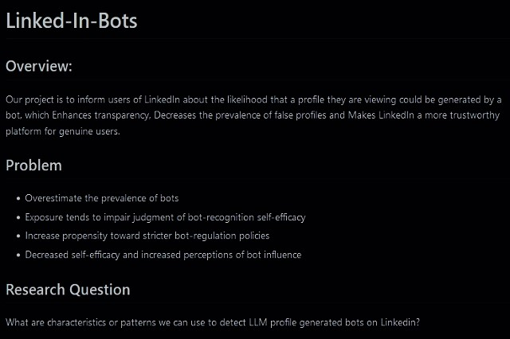
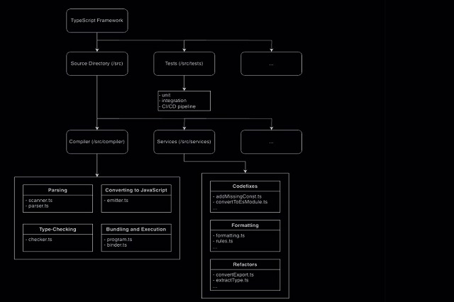
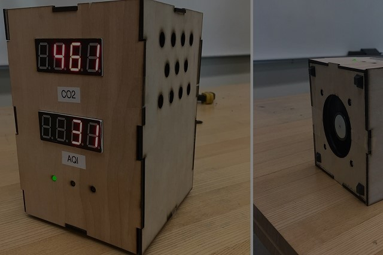
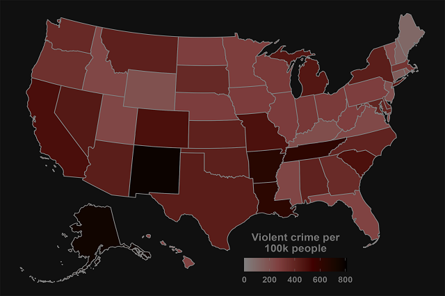
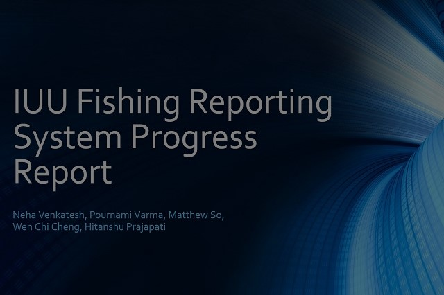

Latest Project

Capstone Project: Chimu
Sponsored by UW iSchool | Softr, Looker
- Inherited from previous project, utilized no code service to develop user databases.
- Assisted in the development and implementation of Web applications.
- Plan and execute usability testing sessions to evaluate the effectiveness of user interfaces and identify areas for improvement.
Data Visualisation:
City Weather Explorer
JavaScript(D3), HTML, CSS
This tool was designed to visualize complex weather data through an interactive web application. Utilizing JavaScript for dynamic user interactions, HTML for structured layouts, and CSS for responsive design, this project aims to provide users with a comprehensive view of weather patterns across different cities.

Data Analytics: LinkedIntegrity
Ongoing | Python
- Developed and implemented machine learning models to improve accuracy of detecting a bot profile, resulting in a 93% accuracy in detection.
- Develop data mining algorithms and techniques to discover hidden insights from vast amounts of structured and unstructured data.

System Implementation:
Digital Medical ID
NDA | SQL server, JavaScript, CSS, HTML
- Engineered and launched a centralized Digital Medical ID system using SQL Server, ensuring secure and efficient management of patient medical records.
- This initiative resulted in a 35% enhancement in data retrieval speed and accuracy for medical personnel.

Focused on assessing the architectural design of an existing codebase, with the goal of optimizing and enhancing system performance.
Conducted a thorough analysis of the system's architecture, identifying key areas where improvements could be made.
Implemented changes that included refining the code structure and optimizing function calls to improve interaction with the database.
Architectural Optimization: TypeScript
JavaScript, TypeScript

Developed an air quality monitor with CO₂ sensing, enhanced with additional pollutant detectors in later versions, displaying data on a Micro OLED screen and LEDs for easy interpretation.
Aiming to refine the technology with more reliable sensors and explore portable versions, the project seeks to motivate lifestyle changes and greater awareness of environmental health impacts.
Product Engineering:
Air Quality Detector
The Lemelson Foundation | C++, Arudino
Website Implementation: BeatBuds
JavaScript, CSS, HTML, React, Firebase

Constructed a database using SQL Server to manage and analyze crime data, designing schema that supports complex queries for deep data analysis.
Implemented advanced data integration techniques to aggregate diverse data sources, providing a comprehensive view of community crime trends.
Using Python to interact with the database, create data visualization for law enforcement and public safety officials.
Database Construction: Community Crime Tracking Database
SQL Server, Python

Developed a detailed project plan using Azure DevOps, outlining critical milestones, resource allocations, and timelines to ensure project stays on track.
Proactively identified and managed potential risks and issues, implementing strategies to mitigate impact on project timelines and outcomes.
Maintained continuous communication with stakeholders, providing updates and incorporating feedback